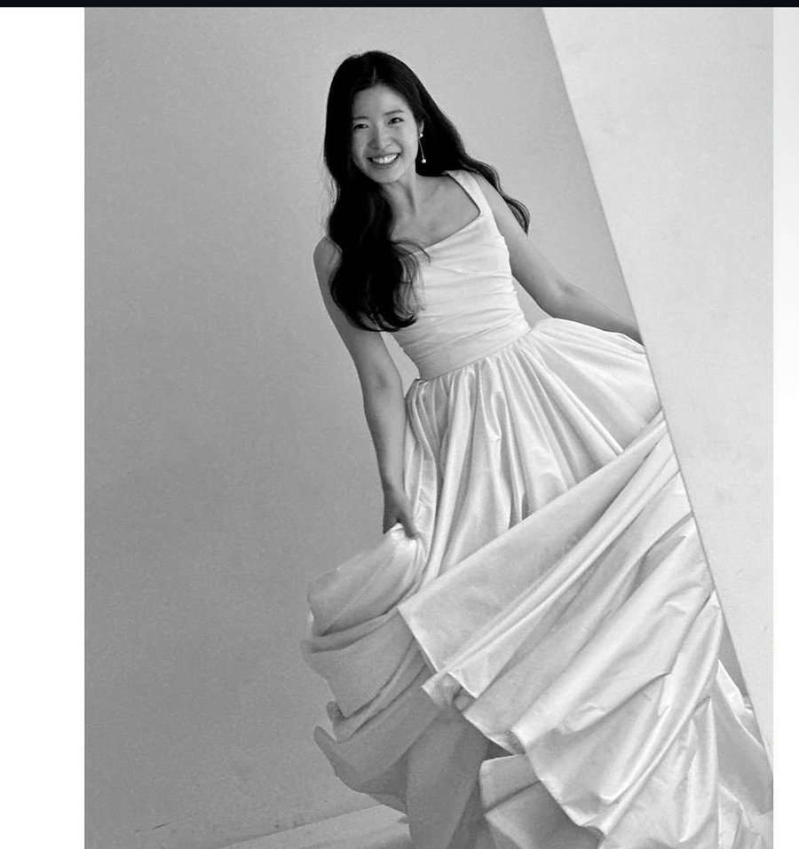
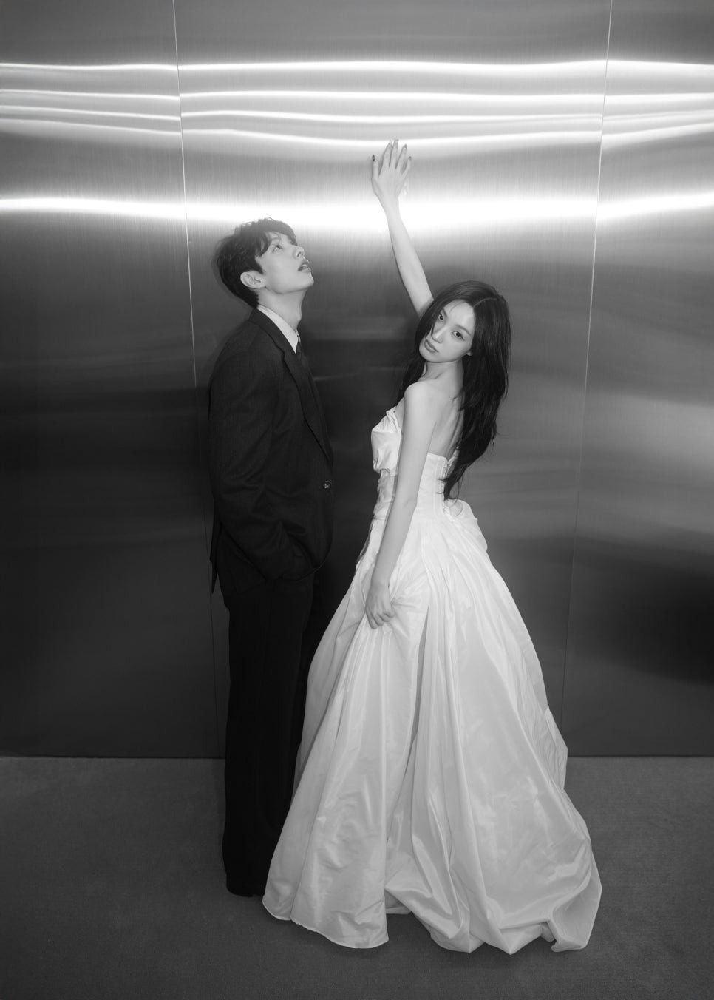

01
Indoor · Silver
실내 · 실버
차가운 메탈 톤 배경 위에 새틴의 윤기를 살리는 공간. 표정과 실루엣이 또렷하게 남아요.
미니멀시크모던




원하는 소품
- 작은 부케흰 장미 + 은방울꽃
- 반지손 클로즈업용
- 이어링진주 또는 실버
- 예복블랙 턱시도 + 보타이
원하는 느낌
차갑고 정돈된, 흑백이 잘 어울리는
메모드레스는 스트랩 슬림 새틴, 헤어는 매끈한 낮은 번. 웃음은 조금 참고 눈빛만 살려요.